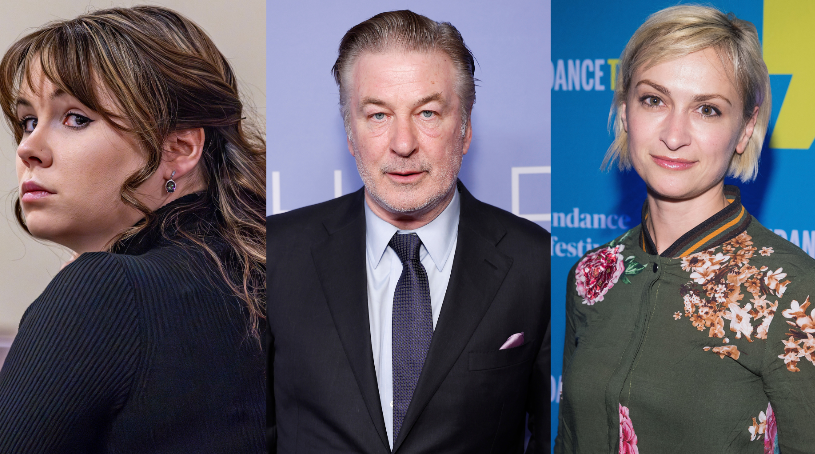
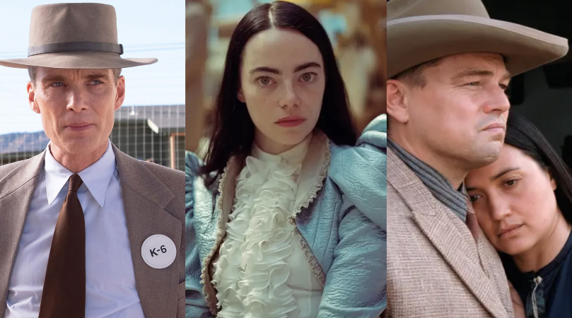
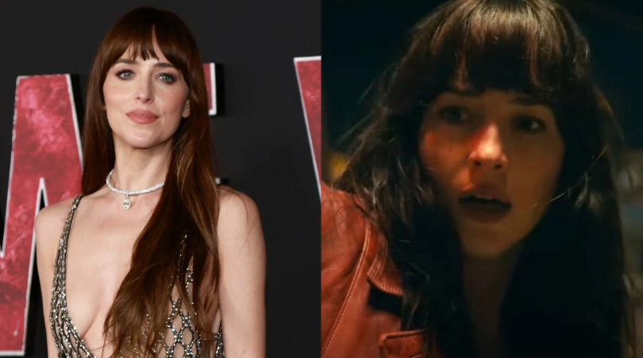

Rust: Família de diretora morta no set reage à condenação de armeira, e deixa no ar, pedido sobre Alec Baldwin

A família de Halyna Hutchins, morta em outubro de 2021 por um tiro acidental no set de "Rust", reagiu à condenação de Hannah Gutierrez-Reed. De acordo com o Daily Mail, os entess da diretora de fotografia ainda não estão satisafeitos com a prisão da armeira, apenas. Eles consideram que ela nãio é a única culpada pela tragédia, e sugeriram que o ator Alec Baldwin, que efetuou o disparo, também seja punido.
Ler mais
Oscar 2024: Horário, onde assistir, indicados e tudo sobre a grande noite do cinema

Neste domingo (10), acontece a 96ª edição do Oscar, diretamente de Los Angeles, nos Estados Unidos. A Academia de Artes e Ciências Cinematográficas e os maiores nomes da indústria se reúnem no Dolby Theatre para homenagear os atores, técnicos ee longas que marcaram a temporada
Ler mais
Dakota Johnson revela que não está surpresa com o fracasso de Madame Teia

"Madame Teia" não agradou aos fãs e foi considerado, até o momento, um dos maiores fracassos da história dos quadrinhos no cinema. Em entrevista à Bustle, publicada nesta terça-feira, Dakota Johnson, protagonista do filme, falou sobre as críticas e revelou que não ficou surpresa com a má recepção do público.
Ler mais